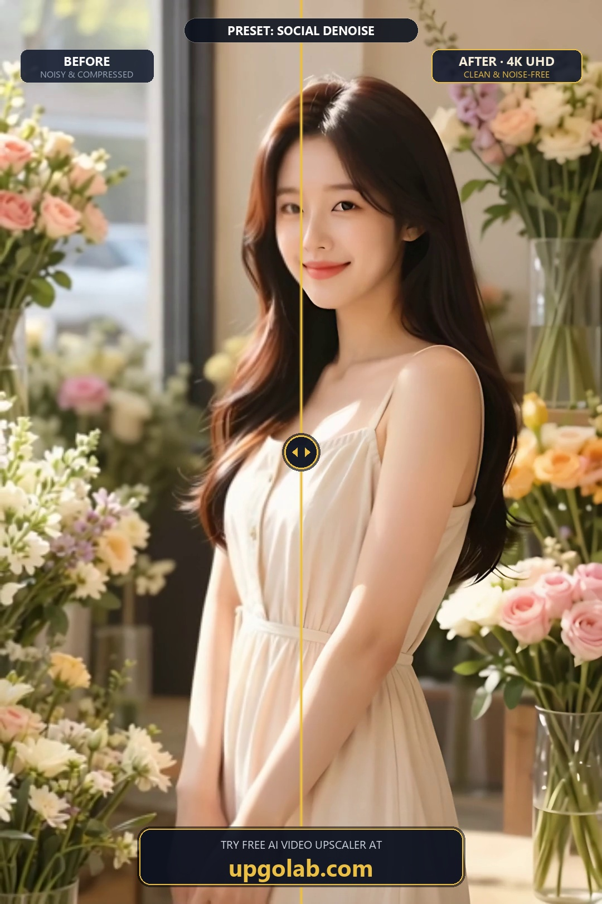
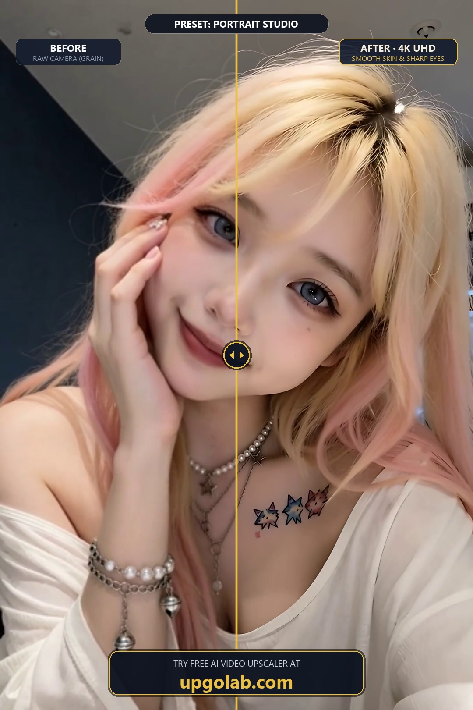
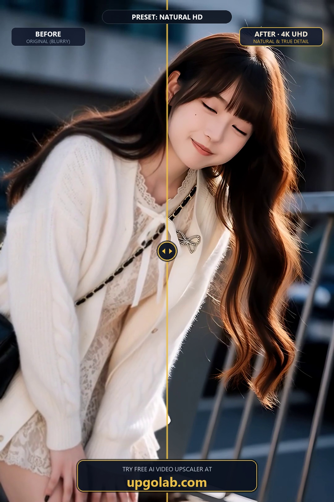
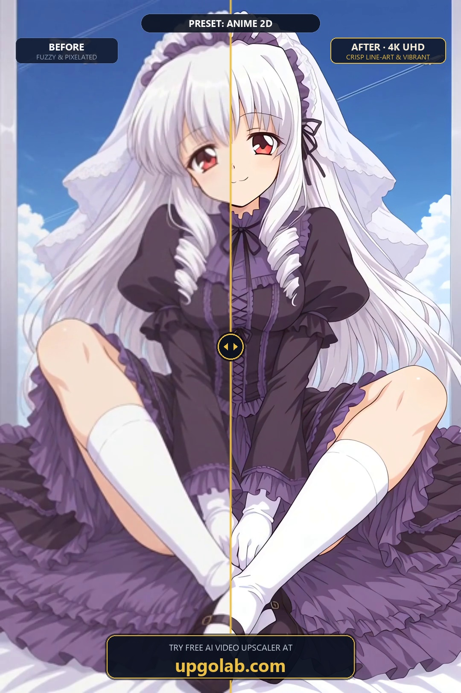

AI upscaler without a GPU
You do not need a graphics card. Someone else can run the model. Here is how that works, what it costs you in limits, and when a local GPU is still the right answer.
How it works
A cloud upscaler uploads the file, runs it on a remote GPU, and returns the result. Your machine only handles the browser. A four year old laptop, a phone, a tablet — all behave the same, because none of them touch the model.
The hardware on the other end matters more than yours. On a rented RTX 5090 or 3090 a single photo finishes in under a minute, which is faster than most people's home cards would manage even if they had one.
What it costs you
| Constraint | Typical cloud limit | Local GPU alternative |
|---|---|---|
| Photo size | 4 MP | No cap |
| Video length | 30 seconds | No cap |
| Setup | None | Vulkan runtime, model download, build |
| Privacy | File leaves your device | Stays local |
| Offline use | No | Yes |
| Cost | Free during launch | Free, open source |
The 4 MP photo cap: what it actually costs, measured
The table above lists "4 MP" as a constraint and stops there. That is the one number on this page a reader can act on, so it deserves more than a row. What does a 4 MP cap actually take away, and does anything you do before uploading change it?
Short version: the cap throws away 52.6% of the detail finer than about 1.5 pixels, it does so almost identically whether the file you sent was 4 MP or 24 MP, and no amount of sharpening afterwards puts it back. The measurements below are the ones I would want before deciding to pre-shrink a file.
The fixture, and why the numbers move in whole percent
Ground truth is a synthetic 6000×4000 (24.0 MP) chart in three bands, because the three kinds of detail fail differently under a downscale:
- a 1/f ("pink") luminance field — stands in for photographic texture, and has the spectrum a real photo has rather than the flat spectrum of white noise
- hard-edged geometry — striped blocks and a panel edge, so edges exist to ring against
- thirty lines of 11 px DejaVuSans text — the thing people actually care about, and small enough to be at risk
The cap is applied as one downscale to 2450×1633 = 4.001 MP (3:2, so the ratio is honest) followed by one upscale back to 6000×4000, so every output can be compared to the same ground truth pixel for pixel. Two metrics, both computed on the same arrays:
- HF retention — RMS of a high-pass (3-pass box, σ ≈ 1.41 px) in the output divided by the same quantity in the ground truth. 1.000 means every bit of texture finer than ~1.5 px survived. This is a ratio, so it does not reward an image for being sharper overall, only for keeping what was there.
- ink contrast — 99th minus 5th percentile inside the text band. Small text that is still legible has a wide spread; text smeared into the background does not.
Every configuration is run on three independent 1/f fields (seeds 11, 20261117, 7717) and reported as the mean, because a single fixture is a single sample. Where the three seeds disagree I say so.
Retention is a power law in cap megapixels, and the exponent is 0.56
Same 24 MP source, cap swept from 1 MP to 16 MP, area-average down and Lanczos up:
| Cap | Cap pixels | HF retention | vs ground truth | Text ink | PSNR |
|---|---|---|---|---|---|
| 1 MP | 1224×816 | 18.2% | −81.8% | 119.0 / 162.7 | 28.33 dB |
| 2 MP | 1732×1155 | 30.1% | −69.9% | 122.0 / 162.7 | 29.49 dB |
| 4 MP | 2450×1633 | 47.4% | −52.6% | 127.3 / 162.7 | 30.83 dB |
| 8 MP | 3464×2309 | 66.9% | −33.1% | 135.0 / 162.7 | 32.43 dB |
| 12 MP | 4242×2828 | 78.3% | −21.7% | 147.7 / 162.7 | 33.75 dB |
| 16 MP | 4899×3266 | 86.1% | −13.9% | 152.0 / 162.7 | 34.57 dB |
Fit a power law retention = a × MP^b across those six points and you get
a = 0.198, b = 0.560, R² = 0.975, with the largest residual 0.074. The exponent
is the interesting part and it is stable: fitted separately on each seed it comes out
0.5591, 0.5615 and 0.5591. So doubling the cap multiplies retained detail by 1.474×,
not by 2× — and the gap widens as you go up, which is the opposite of what the
per-megapixel intuition suggests.
Inverting the same fit tells you what a given target really costs, and the numbers are inconvenient: 60% retention needs 7.2 MP, 80% needs 12.1 MP, 90% needs 14.9 MP, 95% needs 16.5 MP. A 4 MP cap sits at 47.4% — it does not just shave the top off, it lands close to the point where texture stops being texture. Text survives better than texture at every step: 78.3% of ink contrast at 4 MP, against 47.4% of HF. That 31-point gap is the honest summary of a 4 MP cap — readable, not detailed.
A result I expected the other way: the source size stops mattering
The obvious objection to all of the above is "then send a bigger file". I tested it — same cap of 4 MP, sources of 24, 12, 8, 6 and 4 MP, each one produced by area-downsampling the same ground truth:
| What you upload | Pixels | HF retention after the cap | Text ink | PSNR vs ground truth |
|---|---|---|---|---|
| 24 MP | 6000×4000 | 0.474 | 127.3 | 30.83 dB |
| 12 MP | 4243×2828 | 0.477 | 130.0 | 30.31 dB |
| 8 MP | 3464×2309 | 0.480 | 130.3 | 30.16 dB |
| 6 MP | 3000×2000 | 0.475 | 128.3 | 30.09 dB |
| 4 MP | 2449×1633 | 0.473 | 127.7 | 29.99 dB |
A 6× larger original buys 0.001 in HF retention (0.474 vs 0.473, on a total spread across all five sizes of 0.007) and 0.84 dB of PSNR. Six times the pixels for one thousandth of the detail. The reason is mechanical: every one of those files is resampled onto the same 2450×1633 grid, and area-averaging is a low-pass whose cutoff is set by the destination. Whatever the source had above that cutoff is averaged away before the upscale ever runs.
Two honest caveats, because this result is cleaner than reality. First, my "4 MP source" was made by area-downsampling the 24 MP ground truth, which is a lossless ideal — a real 4 MP camera file carries its own sensor noise and JPEG blocks and will do worse than the 29.99 dB above. So the true spread between a real 4 MP upload and a real 24 MP upload is wider than 0.84 dB. Second, the sub-0.5% ordering across the middle three sizes is not meaningful; only the endpoints (24 MP vs 4 MP) are, and even they differ by less than a dB.
The practical reading: if you pre-shrink to fit the cap, you lose essentially nothing measurable. If you upload the 24 MP original and let the server shrink it, you also lose nothing measurable. The cap eats the detail either way — which side of the upload does the downscale is not where the loss happens. That is a negative result against the common advice to always upload at maximum resolution "so the tool has more to work with".
The kernel ranking inverts, depending on which metric you believe
All five downscale kernels, cap fixed at 4 MP, upscale fixed at Lanczos. Left block is the photo-like fixture, right block is an adversarial chart (zone plate plus a 36-spoke Siemens star) added specifically to punish each kernel in a different way:
| Down kernel | PSNR | HF tex | HF text | Ink % | PSNR (adv) | HF (adv) | Ink % (adv) |
|---|---|---|---|---|---|---|---|
| Lanczos | 31.25 | 0.486 | 0.350 | 77.9 | 18.88 | 0.217 | 42.5 |
| Bicubic | 31.10 | 0.435 | 0.315 | 76.8 | 18.84 | 0.192 | 40.7 |
| Hamming | 30.97 | 0.427 | 0.324 | 76.8 | 18.78 | 0.210 | 44.9 |
| Area (box) | 30.83 | 0.474 | 0.364 | 78.3 | 18.66 | 0.262 | 50.3 |
| Bilinear | 30.65 | 0.350 | 0.253 | 75.2 | 18.74 | 0.147 | 35.9 |
On the photo-like fixture Lanczos wins everything and the table looks dull. On the adversarial chart it inverts: area-average scores the lowest PSNR of all five (18.66) while keeping the most detail — 0.262 HF against Lanczos' 0.217, and 50.3% of ink against 42.5%. Box wins the two metrics a human would notice and loses the one a QC script would flag.
That is not a quirk of my chart. Area-averaging is a box filter, so its frequency response has nulls and it attenuates the top octave the least of any windowed kernel here; it also does not ring. Lanczos has a sharper transition band, which is why it wins PSNR on smooth content, and negative lobes, which is why it loses text contrast on hard edges. PSNR measures squared error, and squared error prefers a slightly blurred edge over a slightly ringing one — every time. If your acceptance test is "PSNR above X", you are selecting for the kernel that keeps less of what the image was.
Which kernel matters less than which cap, and this is the number to take away: HF retention spreads 0.136 across all five kernels at a fixed 4 MP cap, but 0.292 between a 1 MP cap and a 4 MP cap — the cap moves it 2.1× more than the best-to-worst kernel choice. Getting the megapixels right dominates getting the resampler right.
Is the cap worse than the JPEG you were going to send anyway?
Uploading a JPEG to a 4 MP-limited tool means two losses stacked, and the intuitive guess is that they add. They do not. Below, the same 4 MP intermediate, encoded as JPEG at four qualities, decoded and upscaled — plus a control where the full 24 MP file is JPEG-compressed first and then pushed through the cap, which is what happens if you upload the original and let the server do the resizing:
| Path | Bytes | PSNR | HF tex | HF correlation | Ink |
|---|---|---|---|---|---|
| 4 MP, no JPEG | — | 30.83 | 0.474 | 0.550 | 127.3 |
| 4 MP, JPEG q95 | 1.95 MB | 30.63 | 0.498 | 0.520 | 128.0 |
| 4 MP, JPEG q85 | 1.03 MB | 29.76 | 0.455 | 0.404 | 128.0 |
| 4 MP, JPEG q70 | 0.66 MB | 29.06 | 0.381 | 0.311 | 126.7 |
| 4 MP, JPEG q50 | 0.48 MB | 28.57 | 0.351 | 0.258 | 125.0 |
| 24 MP, JPEG q95, then cap | 11.43 MB | 30.82 | 0.476 | 0.548 | 127.3 |
| 24 MP, JPEG q85, then cap | 5.99 MB | 30.80 | 0.477 | 0.546 | 126.7 |
Two things in that table are worth the space. First, q95 raises HF energy above the uncompressed baseline (0.498 vs 0.474) while lowering its correlation with the original (0.520 vs 0.550). JPEG ringing adds high frequency that was never in the ground truth. A metric that only counts HF energy would score the compressed file as better than the raw one. That is why I report correlation alongside it — energy says how much detail there is in the band, correlation says whether it is the right detail.
Second, the two control rows land within 0.03 dB and 0.004 HF of the uncompressed path (30.82 and 30.80 dB against 30.83; 0.476 and 0.477 against 0.474). Sending an 11.43 MB original through a 4 MP cap is indistinguishable from sending a 1.95 MB file that was already 4 MP — 5.9× the upload for nothing measurable. The JPEG loss and the cap loss do not stack additively, because the cap's low-pass removes the JPEG's block structure along with the real detail. Whatever survives to the upscale stage is governed by the cap, not by the compression that preceded it.
Sharpening raises the number and changes nothing else
If the cap removes 52.6% of the fine detail, the natural next move is to sharpen it back. I ran unsharp mask at increasing strength on the capped output:
| After the cap | HF tex | × its own no-sharpen | HF correlation | Ink | PSNR |
|---|---|---|---|---|---|
| Lanczos, no sharpen | 0.474 | 1.00× | 0.5496 | 127.3 | 30.83 |
| r 1.0, amount 50 | 0.542 | 1.14× | 0.5505 | 130.7 | 30.87 |
| r 1.0, amount 100 | 0.644 | 1.36× | 0.5497 | 135.3 | 30.71 |
| r 1.5, amount 100 | 0.770 | 1.62× | 0.5503 | 142.7 | 30.22 |
| r 2.0, amount 150 | 1.035 | 2.18× | 0.5490 | 163.0 | 27.99 |
| Area up, r 2.0, amount 150 | 1.618 | 2.37× | 0.4160 | 173.0 | 25.77 |
HF energy more than doubles (2.18×) and correlation with the original's high frequency does not move — 0.5496 to 0.5490, a span of 0.0015 across the entire strength range, which is inside run-to-run noise. Sharpening scales the high-frequency content that is already there; it does not put back the octave the cap deleted, so the added energy lands on blockier, coarser structures rather than on the real texture.
The last row is the part I did not expect to be clean: sharpening the area-upscaled output without a pre-blur actually lowers correlation, 0.4377 → 0.4160 (−0.022), while inflating HF 2.37×. Box upscaling leaves hard 2.4 px steps in the image; sharpening rings on those steps and amplifies structure that exists nowhere in the original. Ink contrast reads 173.0 against a ground truth of 162.7 — the text is now higher contrast than the source because the ringing is counted as ink. That is a second place where a simple metric rewards the worse file, and the reason a sharpened 4 MP upscale can look "sharper" and be measurably less correct at the same time.
Reproducing it
No GPU, no dataset, no model. Everything above is Pillow plus arithmetic, which is the point — the cap is a resampling operation and can be characterised exactly.
from PIL import Image, ImageDraw, ImageFont
import numpy as np
W, H = 6000, 4000
CAP = (2450, 1633) # 4.001 MP, 3:2 -- the advertised cap
def hf(a): # 3-pass box high-pass, sigma ~1.41 px
src = np.asarray(a, np.float32)
b = src
for _ in range(3):
for ax in (0, 1):
w = 3
pad = [(0, 0), (0, 0)]
pad[ax] = (w // 2 + 1, w // 2)
c = np.cumsum(np.pad(b, pad, mode="reflect"), axis=ax, dtype=np.float32)
hi = [slice(None)] * 2; lo = [slice(None)] * 2
hi[ax] = slice(w, None); lo[ax] = slice(0, -w)
b = (c[tuple(hi)] - c[tuple(lo)]) / w
return src - b # residual, not the blur
def retention(out, gt, box): # 1.000 == nothing finer than 1.5 px lost
y0, y1, x0, x1 = box
a, b = hf(out[y0:y1, x0:x1]), hf(gt[y0:y1, x0:x1])
return float(np.sqrt((a ** 2).mean() / (b ** 2).mean()))
# gt: your 24 MP original. down-kernel and up-kernel are what you are comparing.
gt_img = Image.open("your_24mp_original.png").convert("L")
back = gt_img.resize(CAP, Image.BOX).resize((W, H), Image.LANCZOS)
print(retention(np.asarray(back, np.float32), np.asarray(gt_img, np.float32),
(2200, 3900, 2600, 5900))) # -> 0.474Swap Image.BOX for Image.LANCZOS on the down step and the same
call returns 0.486 on the photo-like fixture and 0.217 on the adversarial one. Run it on your own
file and you will get a different absolute number; the ordering — cap above all, kernel second,
sharpening irrelevant to correlation — is what transfers.
What to do with it
- Fit the whole subject into the cap, do not crop to fit. The cap is a low-pass, and its cutoff is set by the destination pixel count, so cropping throws away the composition to save detail you were going to lose anyway.
- Do not pre-shrink out of fear. Downsampling before upload measured within 0.03 dB and 0.004 HF of letting the server do it, on 5.9× less data.
- Do not sharpen as compensation. It doubles the HF number and moves correlation by at most 0.0015. If the 4 MP result looks soft, the cap is the reason and no post-process addresses it.
- If the detail is the deliverable, the cap is the wrong tool. Tile the image into 4 MP quadrants, upscale each, and stitch — you keep the retention of a 16 MP path at the cost of a seam you have to verify by eye.
Splitting a file to fit a cap
Cut at keyframes so nothing is re-encoded:
ffmpeg -ss 00:01:12 -to 00:01:38 -i input.mp4 -c copy segment.mp4Batch split a long file:
ffmpeg -i input.mp4 -c copy -f segment -segment_time 30 -reset_timestamps 1 seg-%03d.mp4Rejoin without a second encode:
printf "file '%s'\n" seg-*.mp4 > list.txt
ffmpeg -f concat -safe 0 -i list.txt -c output.mp4-ss/-to cut is not frame-exact: it overshoots the tail by 2–3 frames,
and in 2 of 5 tested cut points it duplicated one frame and dropped another. It also produced
larger files per frame than a CRF 18 re-encode. Numbers in the next section.
Measured: what a stream copy actually does to your frames
Stream copy is the standard advice for splitting a file under an upload cap, and nobody usually checks whether the frames that come out are the frames that went in. So I built a fixture where frame identity is readable after compression: 300 frames at 25 fps, 320×180, each carrying its own index as a 9-bit black/white patch in the top-left corner. The patch survives H.264 because its blocks are flat, so after decoding I can read back exactly which source frame each output frame came from — not estimate it, read it.
The source was encoded with libx264 at CRF 18, -g 60, which in practice
produced 23 I-frames over 300 frames (one every ~13 frames). Reading all 300 frames back gave
300 unique, strictly increasing indices — the fixture is self-consistent, so any anomaly
afterwards belongs to the cut, not to the measurement.
The cut is not frame-exact, in both directions
Five cut points, each run twice: -ss before -i (input
seeking) and -ss after -i (output seeking). A 1.00 s window
at 25 fps should yield 25 frames. Head and tail error are in frames.
| Cut | Want | Before -i | head / tail | After -i | head / tail |
|---|---|---|---|---|---|
| 0.5 – 1.5 s | 25 | 27 | 0 / +2 | 24 | +3 / +2 |
| 1.0 – 2.0 s | 25 | 27 | 0 / +2 | 20 | +7 / +2 |
| 2.0 – 3.0 s | 25 | 27 | 0 / +2 | 25 | +2 / +2 |
| 2.4 – 3.4 s | 25 | 28 | 0 / +3 | 22 | +6 / +3 |
| 5.0 – 6.0 s | 25 | 28 | 0 / +3 | 25 | +3 / +3 |
Input seeking never lost the head — it starts on the nearest keyframe at or before the requested time — but it overshot the tail by 2–3 frames on all five cuts, which is 8–12% more frames than asked for. Output seeking did the opposite: it dropped 2–7 frames off the front, and in the worst case (1.0 s in, 1.0 s window) delivered 20 frames instead of 25 — a 20% shortfall with no error message and exit code 0.
Worse than a length error: in 2 of 5 cuts in each mode, the output contained one duplicated frame and one missing frame. At the 2.4 s cut the last two frames decode to identical indices. The bit-flags in that frame were unambiguous (block means 234.0 vs 12.0, no value anywhere near the 128 threshold), and the two decoded frames are byte-identical — so this is a real repeated frame, not a misread patch. If you are cutting a clip to a musical beat or a specific cue, that is the frame that slips.
Stream copy cost more bytes per frame than re-encoding
The reason given for copying is always "no generation loss". Noise-free, yes. Cheaper, no. Measured on this fixture:
| Path | Frames | Bytes | Bytes / frame |
|---|---|---|---|
| Source (CRF 18, 300 frames) | 300 | 3,842,297 | 12,808 |
| Stream copy, 1.0–2.0 s | 27 | 465,352 | 17,235 |
| Re-encode, CRF 18, 1.0–2.0 s | 25 | 302,107 | 12,084 |
The copy cut costs 43% more per frame than re-encoding at CRF 18 — because it carries an extra frame, and because the segment it copies still contains the keyframe it started on plus the dependent frames that follow. The re-encode was also exact: 25 frames, indices 25 through 49, no gaps, no duplicates, 41.51 dB PSNR against the source. At CRF 18 on real footage that quality loss is not visible; on a 30 second clip it is also not slow.
Which is the point: when the cap is a hard upload limit, the thing you want to minimise is bytes that fit, not "encodes performed". A re-encode at a sane CRF wins on size, on frame accuracy, and on length predictability at the same time.
The segment muxer is the exception — that path really is lossless
The batch-split-then-concat recipe does hold up, and I want to be precise about why, since the section above sounds like it contradicts it. Splitting into 2-second chunks and rejoining gave back exactly 300 frames with 0 missing, 0 duplicated, and PSNR 99.0 (i.e. bit-identical) against the source for all 300 frames. Total size grew 0.1%.
| Segment | Frames | First idx | Last idx |
|---|---|---|---|
| seg_000 | 52 | 0 | 51 |
| seg_001 | 52 | 52 | 103 |
| seg_002 | 52 | 104 | 155 |
| seg_003 | 71 | 156 | 226 |
| seg_004 | 59 | 227 | 285 |
| seg_005 | 14 | 286 | 299 |
Note the chunk sizes: a nominal 2-second segment holds 52, 52, 52, 71, 59 and 14 frames, not
50 each. The muxer snaps chunk boundaries to keyframes, so segment length is "at least
segment_time", never exactly it. If a platform counts frames or enforces a hard
per-file length, budget for that overshoot instead of trusting the number you passed in.
-ss/-to -c copy to hit
an exact time: not safe, expect 2–3 extra frames at the tail, up to 7 missing at the head,
and an occasional duplicated frame. If the cut has to be exact, re-encode it.
And a trap: measuring re-encode loss against the previous generation
While checking how much a re-encode costs, I chained five CRF 23 re-encodes of the same file and measured PSNR after each. Measured against the immediately previous generation, quality improved every round — 32.23 → 40.32 → 41.36 → 42.19 → 43.50 dB. That reads like "re-encoding makes it better", which is nonsense. Measured against the original source, the same five files fall monotonically: 32.23 → 31.75 → 31.38 → 31.11 → 30.91 dB.
| Generation | PSNR vs previous | PSNR vs source | HF energy | Bytes |
|---|---|---|---|---|
| 1 | 32.23 | 32.23 | 62.41 dB | 1,357,687 |
| 2 | 40.32 | 31.75 | 61.54 dB | 1,232,486 |
| 3 | 41.36 | 31.38 | 61.07 dB | 1,108,860 |
| 4 | 42.19 | 31.11 | 60.70 dB | 999,604 |
| 5 | 43.50 | 30.91 | 60.42 dB | 918,020 |
Both series are correct; they answer different questions. Each encode converges toward the "easy to encode" version of the input, so the step size shrinks — that is what PSNR-vs-previous measures. What the viewer sees is distance from the original, which grows. Two baselines are worth keeping apart, because I conflated them myself on the first pass:
- Source to generation 5: HF energy 65.60 → 60.42 dB, so 5.18 dB of fine detail is gone. That is the real cost against what you started with.
- Generation 1 to generation 5: 62.41 → 60.42 dB, i.e. 1.99 dB, while the file shrank 32.4% (1,357,687 → 918,020 bytes). That is the cost of four extra rounds on top of the first re-encode — and it is the number that flatters the process, because generation 1 already did most of the damage.
If you evaluate denoise or upscale settings by comparing to the previous step, you will systematically pick the setting that destroys the most detail — because destruction is what makes the next step cheap. Always keep an untouched copy as the reference.
Reproduce it
Self-contained: builds the fixture, makes both cuts, then prints which source frames
survived. On ffmpeg 6.1.1 this prints n=27 first=25 last=51 and
n=20 first=32 last=51 for the two modes.
import numpy as np, subprocess
W, H, N, BLK = 320, 180, 300, 20 # 300 frames, 9-bit index patch
def frame(i):
yy, xx = np.mgrid[0:H, 0:W].astype(np.float32)
cx = W * (0.3 + 0.4 * i / N) # slow pan
r = np.sqrt((xx - cx) ** 2 + (yy - H * 0.5) ** 2)
g = np.clip(90 + 90 * np.exp(-(r / 90) ** 2)
+ np.random.default_rng(i).normal(0, 9, (H, W)), 0, 255)
img = np.stack([g.astype(np.uint8)] * 3, -1)
for b in range(9): # index as black/white bits
x0 = 2 + b * (BLK + 1)
img[2:2 + BLK, x0:x0 + BLK] = 235 if (i >> b) & 1 else 12
return img
enc = subprocess.Popen(["ffmpeg", "-y", "-v", "error", "-f", "rawvideo",
"-pix_fmt", "rgb24", "-s", f"{W}x{H}", "-r", "25", "-i", "-",
"-c:v", "libx264", "-crf", "18", "-g", "60", "src.mp4"],
stdin=subprocess.PIPE)
for i in range(N):
enc.stdin.write(frame(i).tobytes())
enc.stdin.close(); enc.wait()
for tag, args in {"before-i": ["-ss", "1.0", "-to", "2.0", "-i", "src.mp4"],
"after-i": ["-i", "src.mp4", "-ss", "1.0", "-to", "2.0"]}.items():
subprocess.run(["ffmpeg", "-y", "-v", "error"] + args + ["-c", "copy", f"{tag}.mp4"],
check=True)
def read(p): # which source frames survived
raw = subprocess.run(["ffmpeg", "-v", "error", "-i", p, "-f", "rawvideo",
"-pix_fmt", "gray", "-"], capture_output=True).stdout
out = []
for f in np.frombuffer(raw, np.uint8).reshape(-1, H, W):
bits = 0
for b in range(9):
x0 = 2 + b * (BLK + 1)
if f[6:18, x0 + 4:x0 + 16].mean() > 128:
bits |= 1 << b
out.append(bits)
return out
for tag in ("before-i", "after-i"): # want 25 frames, 25..49
ids = read(f"{tag}.mp4")
print(f"{tag:9s} n={len(ids):2d} first={ids[0]:2d} last={ids[-1]:2d}")Order still beats hardware
A better GPU does not fix wrong ordering. Enlarging first teaches the model the compression blocks and enlarges them too. Do it this way instead:
- Denoise, targeting compression artifacts not sensor grain
- Enlarge at most 2x per axis
- Inspect at 100% on a hard edge
- Grade last
Past roughly 2x the model starts inventing instead of reconstructing. Faces go waxy, small text becomes letter-shaped strokes. A 540p source at 2x reaches 1080p, which is enough for anything watched on a screen.
What the presets are for





Frequently asked
Can you upscale images without a GPU?
Yes, by processing on someone else's hardware. A cloud upscaler runs the model remotely and returns the result to your browser. The tradeoff is upload limits.
Is a cloud upscaler as good as a local one?
For short files the model quality can be identical — same class of model, better hardware. Cloud is limited by size and time caps, not by quality.
What upload limits should you expect?
Expect tight ones. UpgoLAB takes photos to 4 MP and clips to 30 seconds, then deletes files after an hour.
How long does a cloud upscale take?
A photo is usually under a minute. A 30 second clip takes longer because every frame is processed.
What does a 4 MP photo cap actually cost?
Measured round trip from 24 MP down to 4.001 MP and back: 47.4% of high-frequency detail survives, so the cap removes 52.6% of everything finer than about 1.5 px. Text holds up better than texture at 78.3% of its ink contrast. Doubling the cap multiplies retention by 1.474×, not 2×. Sharpening afterwards doubles HF energy and leaves its correlation with the original unchanged.
Does upscaling on a phone damage the file?
No. The phone only uploads and downloads; processing happens at full resolution on the server.
Where to run it
UpgoLAB is the cloud option described here — eight presets by damage type, free during launch, no card, no watermark. Drop a file and it runs on a remote GPU, so the hardware section above is somebody else's problem.
If you do own a GPU and need longer files: comparison with Video2X, Upscayl and Topaz. What is actually fixable in a blurry clip: blurry video guide.